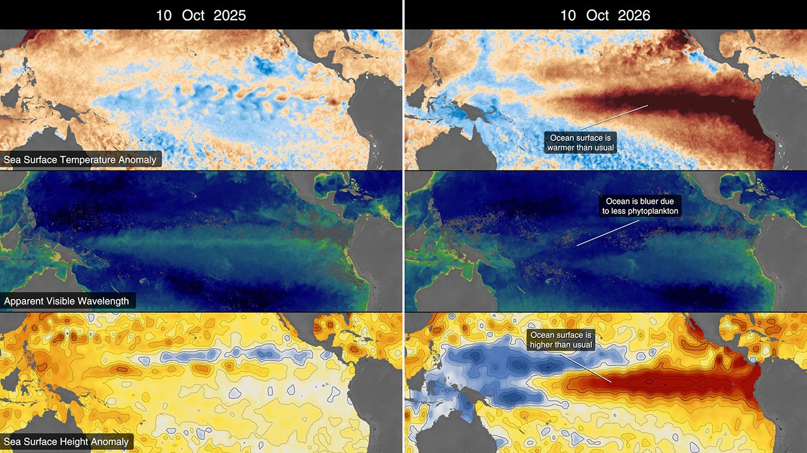

01
AO VIVO: Flamengo visita Estudiantes pelo primeiro jogo da semi da Libertadores
LANCE! · 15/10/2026 · 21:20 (Brasília)Fonte original ↗
 noticias.uol.com.brPorta-voz de Trump insiste em se apresentar como advogada apesar de questionamentos sobre suas credenciais
noticias.uol.com.brPorta-voz de Trump insiste em se apresentar como advogada apesar de questionamentos sobre suas credenciais www.eeas.europa.euII Fórum de Investimentos Brasil-União Europeia
www.eeas.europa.euII Fórum de Investimentos Brasil-União Europeia Radio ShigaLíder governista sul-coreano quer reforçar laços com JapãoThe Lagos ReviewAU & AFRIMA open entries for 10th edition
Radio ShigaLíder governista sul-coreano quer reforçar laços com JapãoThe Lagos ReviewAU & AFRIMA open entries for 10th edition University of California, BerkeleyHow Berkeley shaped NASA’s newest space telescopeطقس العربChuvas e raios em 13 países árabes neste fim de semana
University of California, BerkeleyHow Berkeley shaped NASA’s newest space telescopeطقس العربChuvas e raios em 13 países árabes neste fim de semana fijisun.com.fjAustralia commits additional $8m to Women’s Fund Fiji
fijisun.com.fjAustralia commits additional $8m to Women’s Fund Fiji Portal do AgronegócioAçúcar supera 21 centavos em Nova York com riscos à produção no Brasil, Índia e EuropaSBT NewsFlávio x Lula: o que defendem para saúde e combate à pobreza | #JornaldoSBTNews
Portal do AgronegócioAçúcar supera 21 centavos em Nova York com riscos à produção no Brasil, Índia e EuropaSBT NewsFlávio x Lula: o que defendem para saúde e combate à pobreza | #JornaldoSBTNews www.wbrz.comFormer Southern University professor tied to 2026 Nobel Prize physics discoverySBT NewsEUA enviam soldados à América Latina para treinamento | #JornaldoSBTNewsGZHJuventus vira sobre Celta (2-1) e mantém liderança da Liga Europawww.msn.comUnião Europeia. Líderes defendem acordo sobre orçamento até 2034 "em tempo útil"
www.wbrz.comFormer Southern University professor tied to 2026 Nobel Prize physics discoverySBT NewsEUA enviam soldados à América Latina para treinamento | #JornaldoSBTNewsGZHJuventus vira sobre Celta (2-1) e mantém liderança da Liga Europawww.msn.comUnião Europeia. Líderes defendem acordo sobre orçamento até 2034 "em tempo útil" jornaleconomico.sapo.ptFrança e Alemanha admitem incluir Reino Unido nas regras automóveis da UE, mas exigem alinhamento com tarifas à ChinaHerald.co.zwZim, Gabon step up talks on AU summit bidScoop - New Zealand NewsGreen Appointed To National Tourism Leadership Groupwww.msn.comTrump cancela transmissão ao vivo da execução do autor do ataque em Fort Hoodwww.msn.comLiga Europa: Benfica-Celtic, 4-1 (destaques)www.msn.comSob Lula, China bate recorde de comércio com o Brasil, com destaque para petróleoInfoMoneyEgito AntigoTNH1Regência e co-regência de Escorpião: entenda a influência de Plutão e Marte sobre os nativoswww.msn.comIsrael halts commercial goods from entering Gaza; Hamas denies tax claimsHerald.co.zwZimbabwe records 22 percent growth in diaspora inflowsTerraEvanilson celebra noite histórica do Bournemouth na Liga EuropaVision TimesTaiwan Foreign Minister Promotes ‘Taiwan Model’ at Warsaw Security ForumPortal do AgronegócioMilho sobe 14% em Sorriso, mas maior oferta dos EUA amplia concorrência com o BrasilHerald.co.zwPotência africana na ONU: o continente conseguirá o veto?band.com.brTrump enfrenta pressão para demitir porta-voz após polêmica sobre diplomaGZHEx-Inter rouba a cena na Europa Leaguejornaldebrasilia.com.brChina e Coreia do Norte inauguram ponte entre países; estrutura passa a ser principal conexão terrestreSBT NewsF1 na África: por que o GP de Ruanda gera polêmica?Cook Islands NewsCook Islands U20 beach volleyball players gain crucial experience
jornaleconomico.sapo.ptFrança e Alemanha admitem incluir Reino Unido nas regras automóveis da UE, mas exigem alinhamento com tarifas à ChinaHerald.co.zwZim, Gabon step up talks on AU summit bidScoop - New Zealand NewsGreen Appointed To National Tourism Leadership Groupwww.msn.comTrump cancela transmissão ao vivo da execução do autor do ataque em Fort Hoodwww.msn.comLiga Europa: Benfica-Celtic, 4-1 (destaques)www.msn.comSob Lula, China bate recorde de comércio com o Brasil, com destaque para petróleoInfoMoneyEgito AntigoTNH1Regência e co-regência de Escorpião: entenda a influência de Plutão e Marte sobre os nativoswww.msn.comIsrael halts commercial goods from entering Gaza; Hamas denies tax claimsHerald.co.zwZimbabwe records 22 percent growth in diaspora inflowsTerraEvanilson celebra noite histórica do Bournemouth na Liga EuropaVision TimesTaiwan Foreign Minister Promotes ‘Taiwan Model’ at Warsaw Security ForumPortal do AgronegócioMilho sobe 14% em Sorriso, mas maior oferta dos EUA amplia concorrência com o BrasilHerald.co.zwPotência africana na ONU: o continente conseguirá o veto?band.com.brTrump enfrenta pressão para demitir porta-voz após polêmica sobre diplomaGZHEx-Inter rouba a cena na Europa Leaguejornaldebrasilia.com.brChina e Coreia do Norte inauguram ponte entre países; estrutura passa a ser principal conexão terrestreSBT NewsF1 na África: por que o GP de Ruanda gera polêmica?Cook Islands NewsCook Islands U20 beach volleyball players gain crucial experienceA nova secretária de imprensa da Casa Branca, Katie Zacharia, que enfrenta questionamentos sobre suas credenciais jurídicas, pareceu reconhecer nesta quinta-feira (15) que não foi aprovada no exame da Ordem dos Advogados, mas argumentou que tinha razão
Com a presença do comissário europeu Jozef Síkela, encontro internacional discutirá investimentos em matérias-primas estratégicas , minerais críticos , bioeconomia, infraestrutura e o impacto do Acordo UE-Mercosul. Serão anunciados projetos apoiados pela UE no Brasil

UA e AFRIMA abrem inscrições para a 10ª edição The Lagos Review
Chuva e relâmpagos em 13 países árabes neste fim de semana Clima Árabe
O presidente do Senado, Davi Alcolumbre (União Brasil-AP), divulgou que vai promulgar nesta sexta (16) a Proposta de Emenda à Constituição (PEC 221), que acaba com a escala um dia de descanso a cada seis de trabalho no país, a escala 6x1. Na mesma sessão solene desta sexta, o parlamentar, que é também presidente do Congresso Nacional, escreveu que vai assinar também a PEC 14, que prevê aposentadoria especial aos agentes comunitários de saúde e aos agentes de combate às endemias. “Solicito a todos que compareçam para que possamos celebrar a aprovação dessas emendas de grande importância para o povo brasileiro”, escreveu o parlamentar em docume
O Corinthians iniciou com vitória a caminhada em busca do sétimo título - o quarto consecutivo - da Libertadores Feminina, que está sendo disputada em Quito (Equador). Nesta quinta-feira (15), as Brabas derrotaram o Colo-Colo (Chile) por 2 a 0 no Estádio Casa Blanca, pelo Grupo A da competição. Foi o primeiro jogo desde o vice do Campeonato Brasileiro para o São Paulo , há 12 dias. O próximo compromisso do Timão será neste domingo (18), às 21h (horário de Brasília), contra o Caracas, novamente no Casa Blanca. O time venezuelano, porém, ainda não chegou ao Equador e relatou dificuldades para aprovação dos vistos das atletas para entrada no paí
O Hospital Geral de Bonsucesso chegou à marca de 450 leitos em operação para atendimento do Sistema Único de Saúde (SUS). Parte do Plano de Reestruturação dos Hospitais Federais do Rio de Janeiro, o hospital retomou o funcionamento da emergência 24 horas e chegou a 390 leitos em operação. Nesta quinta-feira (15), o ministro da Saúde, Alexandre Padilha, visitou o hospital. Notícias relacionadas: Participação do Brasil em pesquisas clínicas cresce após marco legal. Saúde aprova protocolo para tratar crianças com hemofilia A. Entenda o linfoma não Hodgkin, câncer que causou morte de Netinho. “A gente comemora, hoje, aumentar em três vezes o volu
Paris e Berlim estão dispostas a alargar ao Reino Unido o programa “Made in Europe”, que privilegia a indústria europeia nos subsídios e contratos públicos. Em contrapartida, Londres terá de alinhar as medidas comerciais com Bruxelas, incluindo as tarifas sobre os veículos elétricos chineses.
Obras tiveram início em 2010 e foram concluídas em 2014, mas a ponte permaneceu sem uso até a inauguração oficial nesta quinta

Novos fechamentos de lojas para rede de roupas femininas em dificuldades 1News

O Ministério da Energia saudita afirma que o ataque Houthi causou um “incêndio limitado” no complexo da sede da Aramco em Dhahran.

O ministro Marco Aurélio Bellizze, do Tribunal Superior Eleitoral (TSE), proibiu nesta quinta-feira (15) a Meta de restringir a entrega de postagens relacionadas aos candidatos à Presidência da República. Pela decisão, o Facebook, uma das redes sociais operadas pela Meta, deve abster-se de reduzir a distribuição de publicações, impedir recomendações ou restringir resultados de busca. A Meta controla também Instagram e WhatsApp. A decisão determina tratamento igualitário entre as candidaturas e prevê medidas contra restrições desiguais. Notícias relacionadas: Campanha de Lula vai ao TSE após IA da Meta restringir buscas. OEA será acionada por
Milhares de pinguins encontrados mortos na Antártica em 2024 eram principalmente Notícias do Bahrein
ADF aumenta habilidades de combate na missão antártica The Mercury

Cientistas identificam cólera aviária como principal causa de mortes de pinguins na Antártica UC Davis
Camboja sobe para o 15º lugar no ranking global de Comércio Sustentável Khmer Times